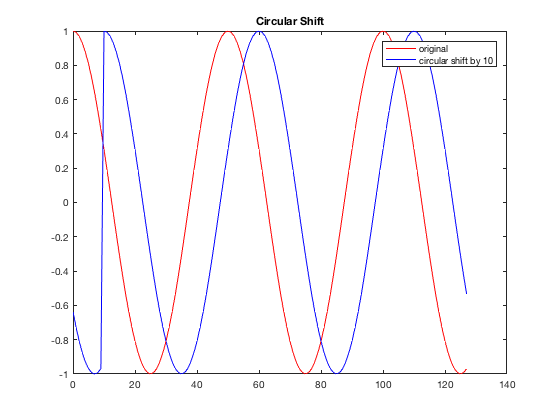
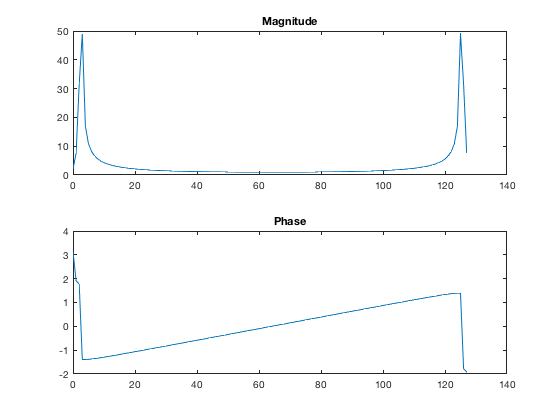
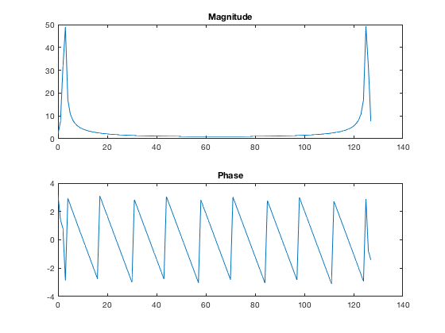
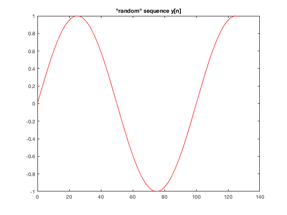
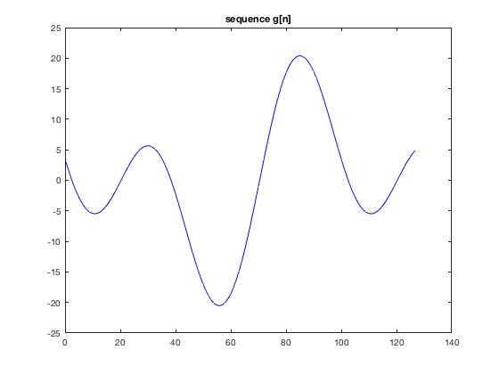
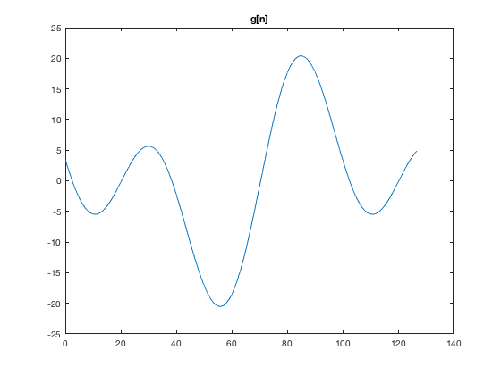

Lab 7 Christian Ardito SID: 861140154 Jesse Layman SID: 861135479
Professor: Yingbo Hua, TA: Qiping Zhu, EE110B-023
Contents
task1

N = 128; n = 0:N-1; x = cos(2*pi/50*n); x_cs = circshift(x',10)'; plot(n,x,'r',n,x_cs,'b') title('Circular Shift') legend('original','circular shift by 10')
task2
close all X = zeros(1,length(n)); for k = 0:N-1 for ni = 0:N-1 X(k+1) = X(k+1) + x(ni+1)*exp(-1j*2*pi*k*ni/N); end end figure subplot(2,1,1); plot(n,abs(X)); title('Magnitude') subplot(2,1,2); plot(n,angle(X)); title('Phase') X1 = X;
task3
close all X = zeros(1,length(n)); for k = 0:N-1 for ni = 0:N-1 X(k+1) = X(k+1) + x_cs(ni+1)*exp(-1j*2*pi*k*ni/N); end end figure subplot(2,1,1); plot(n,abs(X)); title('Magnitude') subplot(2,1,2); plot(n,angle(X)); title('Phase') X2 = X;
task4
close all Y = zeros(1,length(n)); for k = 0:N-1 Y(k+1) = Y(k+1) + X1(k+1)*exp(-1j*2*pi*k*10/N); end figure subplot(2,1,1); plot(n,abs(Y)); title('Magnitude') subplot(2,1,2); plot(n,angle(Y)); title('Phase')
task5
close all y = sin(2*pi*n/100); plot(n,y,'r'); title('"random" sequence y[n]') g = cconv(x,y,128); figure plot(n,g,'b'); title('sequence g[n]') 
task6
X = X1; Y = zeros(1,length(n)); for k = 0:N-1 for ni = 0:N-1 Y(k+1) = Y(k+1) + y(ni+1)*exp(-1j*2*pi*k*ni/N); end end % figure % subplot(2,1,1); % plot(n,abs(X)); % title('Magnitude') % subplot(2,1,2); % plot(n,angle(X)); % title('Phase') G = X.*Y; g = zeros(1,length(n)); k = 0:N-1; for ni = 0:N-1 g(ni+1) = 1/N*sum(G.*exp(1j*2*pi*k*ni/N)); end figure plot(n,g) title('g[n]')
Warning: Imaginary parts of complex X and/or Y arguments ignored